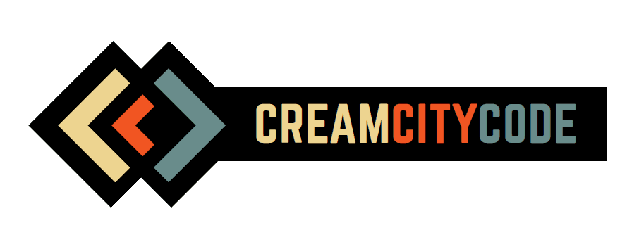

<div class="overlay" [ngClass]="{ 'hide': isTakingPhoto() }">
  <div *ngIf="isIdle()">
    <button class="start-btn" (click)="start()">Start</button>
  </div>

  <div *ngIf="isCountingDown()">
    <div class="countdown">{{ photoCountDown }}</div>
  </div>

  <div *ngIf="isTakingPhoto()">
    Taking photo...
  </div>

  <div *ngIf="isPresentingPhotos()">
    
    <!--<button class="reset-btn" (click)="reset()">Reset</button>-->
  </div>

  <div class="anchor-bottom">
    <!---->
  </div>
</div>
